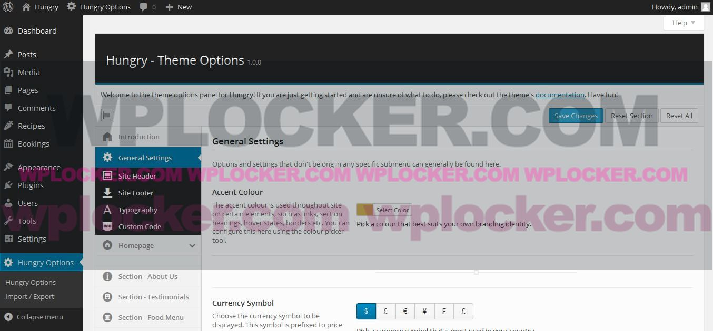

01 - Introduction
Table of ContentsThanks a lot for purchasing this theme! If you already have a good amount of WordPress knowledge and just want to dive straight in, then go ahead! If you are new WordPress, then please take some time to have a read through this file. It has a lot of useful information to help get you started.
Changelog
V1.0.2 - Added: WPML config.xml files for Theme and Plugin. - Added: Ability to add Video Backgrounds for Slogan Sections. - Added: Ability to upload Header Images for sepearate pages/posts/recipes. - Added: Ability to use custom slug names for each section. - Added: Ability to disable the shrinking header animation. - Added: Two more Slogan Sections. - Updated: TGM Plugin Activation Class to 2.4.1 (XSS Issue) - Updated: Redux Framework V3.5.4.3 - Updated: Elusive Icons. - Improved: Menu Shortcode. - Improved: Site Preloader now uses Accent Colour. - Fixed: Menu being cut off on mobile screens. - Fixed: Recipes tab sometimes not showing in the admin screen. V1.0.1 - Improved: Data Validation/Sanitization - Added: Ability to turn off linking in Recipes widget - Fixed: Fullscreen slider height V1.0.0 - Initial Release
02 - Installation - WordPress
Table of ContentsIf you are new to WordPress, then installing it might seem like a daunting task. Thankfully, a lot of web hosts offer a one-click install that will do all the heavy lifting for you! Each web host differs from one another, so if you are unsure, then you should contact them and they will help you through the process.
The option to install WordPress on your server is found somewhere in the menu when you log in to your web hosts control panel. Its sometimes found in the form of a CGI script.
The above example is from Heart Internet's control panel. You might see something similar to this. Choose the WordPress option and it will usually prompt you to select a path to install it to. From here you can follow some simple steps, like creating a new username and password, and then that should be all you need to do!
Once you have logged in to your WordPress admin dashboard, it is highly recommended to update to the latest version if you get prompted to do so. You should also update your plugins and other themes to their latest versions too. Once everything has been updated, you should go to your Settings menu and configure all relevant options in there.
Installing WordPress Manually
If you prefer, you can install WordPress yourself manually. The absolute best place to start is to follow the instructions outlined in the codex, which can be found here.
Important Note
The latest version of WordPress, as of writing this, is currently 4.1 Please note that the theme will refuse to function and switch back to the default theme if you don't have the latest version of WordPress. This is because the theme uses some of the newer functionality that has only just been introduced in version 4.1.
03 - Installation - The Theme
Table of ContentsWith WordPress installed and updated, you can now begin to install the theme. In your WordPress admin panel, navigate to Appearance then click on Themes. This will take you to the Themes page. You should now see a list of themes to choose from with the option to add a new one (you can't miss it, its a big box that says "Add New Theme"!). Go ahead and click on that.
You will now be on the Add Themes page. Next, click on Upload Theme.

It should now prompt you to upload a theme in a .ZIP file format. Click on the "Browse" button and select the zip file named "hungry-theme.zip" then click on Install Now.
This process may take a few minutes. Once the theme has been installed, you will have the option to view it in the Customizer or activate it. Viewing it in the Customizer will allow you to preview it and make a few customizations, just make sure that you activate it when you are finished.
Now that your theme has been installed and activated, you should see a warning notice telling you to install some plugins. Please proceed on to the next chapter for instructions on what to do next.
Problems you Might Encounter
When uploading the theme (or any large file), you may encounter the following error message:
Maximum file size upload limit exceeded.
This means that you cannot upload files that are higher than the maximum size limit, which could be as low as 2MB. This mostly depends on your web server. This can easily be fixed if you have FTP access and are able to edit either the "php.ini" file, or the ".htaccess" file.
The following link will give you several different methods of how to resolve this. But if you really don't want to go and edit these files yourself, please contact your web host. They should be able to help you out in no time :)
04 - Installation - The Plugins
Table of ContentsHungry makes use of three plugins, one of which is required to enhance functionality, while the other two are optional, but also enhances functionality. After installing the theme, you should now have a warning notice at the top of your page promting you to install plugins. Clicking on "Begin Installing Plugins" should automatically start downloading and installing the plugins.
Once the plugins have been downloaded and unpacked, you will now have the option to install the plugins all at once. To do this, check all the boxes and choose the "Install" option from the dropdown menu, then click on "Apply".
Now all of your plugins should be installed, but they won't be activated yet. This is the next step. You should now see another notice saying that each of the plugins are currently inactive. So lets rectify that by clicking on "Begin activating plugins".
You will come to another screen with the option to "Bulk" install the plugins. So once again, check all the boxes like you did earlier, but this time select "Activate" from the dropdown menu, then click on "Apply".
All of your plugins should now be activated and no further action is needed. If you visit your plugin page, you should see that these plugins are active. You can also deactivate plugins from this page too.
05 - Using a Child Theme
Table of ContentsAlso included in the download package is a child theme. Using a child theme is optional but if you plan to add your own functions and code, then it is highly recommended that you use this instead of modifying the main theme files. If you would like to know more about WordPress child themes, please visit the Codex.
Child themes allow you to add your own code, functionality and styles without changing any of the main template files. This is especially useful when ever you update your theme because this means all of you chnages will remain intact. If you look in the main download package you will see a folder named "hungry-child". Simply copy this folder into your "themes" directory using an FTP client. Here's what your directory structure might look like with a child theme installed:
.. hungry hungry-child | - style.css | - functions.php
If you would rather not go down the FTP route, there are plugins available too. Here's a good place to start: One Click Child Theme.
06 - Importing Demo Content
Table of ContentsThis step is completely optional but if you'd rather have a load of demo content to play around with, then thats what this chapter is for. Hungry comes with a file that will import all the content you see on the demo site, minus the images. The images are replaced with placeholders instead as they are not licensed to be bundled with the theme. If you would like more information on where to download and purchase these images, please see the credits section further down at the end of this document.
In your main download file, you will see a folder named "demo". This folder contains an XML file that is used to import all of the data needed. The file is called "hungry-demo-data.xml" and you will need this file a bit later on. Lets go through this process one step at a time.
Step 01
Firstly, navigate your way to Tools -> Import. This will take you to the Import screen. This handy tool will let you import content from a variety of different blogging platforms, but for this, we are going to select WordPress.
Step 02
Once the WordPress option has been selected, you may be prompted to install the WordPress Importer plugin if you don't already have it. So if you need to, install this first by clicking on the "Install Now" button in the pop up window. Once the plugin has been downloaded and unpacked, you should activate and run the plugin when prompted to do so.
Step 03
You will now be taken to the Import WordPress page. You will need to click on the "Browse" button and locate the file "hungry-demo-data.xml" mentioned earlier. Once this has been selected, click on "Upload file and import". Don't forget to check the options you want to include, including media, and WordPress should start the import process. It may take a while depending on your connection speed.
Thats all there is to it! You should have all the posts and pages that were seen in the demo site for you to configure to your hearts content.
A note about menus
Please be aware that if you choose to import the WordPress custom menus too, you will need to amend some of the custom link's URLs to reflect your own website's URL.
07 - Theme Options
Table of ContentsHungry comes with a powerful theme options panel courtesy of the Redux Framework. Throughout the option's pages, there are explanations on what each option does, so this will only be a quick overview. To access the theme options, simply click on the tab that says Hungry Options on the left. You can also access it directly through the admin bar at the top.
You can navigate through each options page using the menu on the left. Note that some of these menu tabs also have submenus that reveal more pages. Each option has a brief description of what it does and how it is configured so please take some time to have a read through each one to get a good idea of what to do.
You will also notice that each "built-in" section has its own options page, like the About Us section. This makes it easier for beginners to customize the look of their site without having to do any coding. Customizing the background slider is as easy as navigating to the Background Slider tab and tweaking the settings.
08 - Custom Headers
Table of ContentsHungry makes use of WordPress's custom header feature. These headers will appear on all pages except the homepage template, which uses a custom slider instead. To add a custom header, go to your admin area and click on Appearance then Header in the side menu. This will take you to the customizer screen (as of WordPress 4.1), where you can upload not just one, but multiple header images and randomly show different ones on each page if you want!

09 - Homepage Setup
Table of ContentsOnce you have the theme and plugins installed, we can now move on to the Homepage. The first thing you will need to do is create a new page. You can do this by navigating to the Pages tab on the left and either create a new page, or edit an existing one. To create a new page, click on Add New.
While editing the page, you will notice a section called Page Attributes. This is where you can select your page templates using the dropdown menu that says Template. From this menu, select the One Page Layout.
This is kind of a special page template, so all of the post content and feature image will be ignored here, but not the page title. You can call it whatever you like, but I would recommend calling it "Home" or something similar. Go ahead and click on Update to update your page or Publish if its a new page.
Since your blog page is usually your default front page, we now need a seperate page to display your blog posts. So just like before, click on your Pages tab and create a new page. Call this one "Blog", "News" or something similar and click Publish. Again, there's no need to enter any content. We're going to let WordPress handle this.
Now you will need to visit your Settings page and select the Reading tab. You should now be on the Reading Settings page. For the Front Page Displays option you will need to select your "Home" page as your Front page, and select your "Blog" page as your blog page.
Once all this is done, don't forget to click Save Changes! You can now visit your site and see the homepage. All the content you see is default content that can be edited through either the theme options panel, or elsewhere depending on the section you wish to edit. Please see one of the other chapters in this guide for further information.
10 - Homepage Layout
Table of ContentsHungry comes with a robust homepage layout builder that allows you to swap, move, insert and remove any section you like. This is accessed through the theme options page by clicking on the Homepage tab.
By default, the homepage template is built with two types of sections: Built-in sections and custom sections. Built-in sections are already available by default and can be customized in the theme options panel. Custom sections work differently however. This type of section uses content from your WordPress pages.
The two columns that you see represent what is enabled and disabled for display on the homepage. You can use the mouse to drag blocks to re-order them or remove them completely. Custom sections are labelled with the name of your WordPress pages and are prefixed with a page icon.
Once you have all the sections where you want, don't forget to click on Save Changes. Here's a tip: If you need more control over a custom section's padding, edit the page itself and edit the options associated with the one-page layout, shown in the screenshot below.
WordPress's cutom menus allows you to create same-page navigation as well as multi-page navigation. This chapter will cover the basics of WordPress menus and how to link to sections that are on the same page. First, navigate to Appearance -> Menus. This will take you to the "Edit Menus" screen.
From here you can begin building your custom menu. Give your menu a name, then click on "Create Menu". This will save your new menu so you can add it to a location. Now you can click on Manage Locations and select your newly created menu from the dropdown list and set it as your site's main navigation. Click on "Save Changes" when you're done.
When you visit your site now, you will see your new menu in the main navigation bar. You can put anything you like in your menus, including custom links. This is what we are going to need to do in order to link to sepearate sections on the same page.
Go back to the "Edit Menus" screen from earlier and create a new menu item by clicking on the Links tab. For the URL field, type in the full URL of your site followed by a hash symbol (#) and then the name of the section's ID. For example, if you wanted to create a link to the "About Us" section, this is what your URL might look like:
http://www.exampleurl.com/#hungry-about-us
The above example is based on if you set your one-page layout as your homepage. If it was a seperate page, then you would need to use the full URL of that page followed by the hash tag ending, like so:
http://www.exampleurl.com/seperate-page/#hungry-about-us
The following is a list of all available built-in sections to link to:
- About Us -
#hungry-about-us - Blog -
#hungry-blog - Gallery -
#hungry-gallery - Food Menu -
#hungry-menu - Reservations -
#hungry-reservations - Slogan 01 -
#hungry-slogan-01 - Slogan 02 -
#hungry-slogan-02 - Meet the Staff -
#hungry-staff - Testimonials -
#hungry-testimonials - Custom Section -
#hungry-custom-section-{ID}- Replace {ID} with your page's ID number. This is a numeric value and can be found by hovering your mouse over the post's link.
A note about importing menus
Please be aware that if you choose to import the WordPress custom menus when importing data, you will need to amend some of the custom link's URLs to reflect your own website's URL.
12 - Adding Recipes
Table of ContentsBefore you can add Menus and Recipes, you will need to make sure that the Hungry Plugin is installed and activated. If not, please go through chapter 02 on installing plugins first. You will be able to see the Recipes tab in the menu on the left when you are logged in to your WordPress admin.
Creating Menus
Creating menus for your recipes is very similar to creating categories for your regular WordPress posts. If you click or hover over the Recipes tab in the left hand menu, you will see the Menus option. Go ahead and click on that.
You should now be on the Menus page. You can add as many menus as you want and you can even assign recipes to several menus, not just one! Fill out the information required on the left and then click Add New Menu. These are the fields you need to fill in;
- Name - This is a required field. The name of your menu.
- Slug - Optional. If left blank, WordPress will create a slug name for you.
- Description - Optional. This will only be displayed on Taxonomy pages.
You don't have to create new menus this way, you can also create them while creating recipes. Just like adding categories in posts. It's completely up to you!
Creating Recipes
If you are already familiar with creating posts, then you are half way there! Click on your Recipes tab in the left and select Add New. This will take you to the Add New Recipe screen.
If you have been using WordPress for a while, this screen will look familiar to you. All of the basic fields you edit in regular posts can be found here too, but with a few extra ones. Lets begin by filling out our standard fields.
- Title - Add a title for your recipe (e.g. Garlic Bread).
- Content - Enter some content. This can be anything you like. Shortcodes are allowed.
- Menus - Add this recipe to an exisitng menu, or create a new one. If you create a new one, you can edit it further in the Menus page mentioned ealier.
- Featured Image - Just like normal posts, you can attach a featured image to each recipe. Ideally this should be a photo of the dish in question.
- Excerpt - You can use this field to show a smaller description shown in the menu. If nothing is entered here, the first twenty words are used from your content instead.
The next set of options is where recipes differ from normal posts. Further down the page, there is another area with extra fields that are specific to recipes. Lets go through them one at a time.
- Price on Menu - Enter a price for this recipe. The currency symbol can be changed in the theme options.
- Featured Item - Check this option to make it a featured item on the menu. This simply styles it differently to other menu items so that it stands out more.
- Link to recipe from menu - Check this option if you want to allow the user to visit the recipe's main page.
- Tooltip Text - Tooltip text can be displayed when the user hovers over the price tab. Can be effective when used with the "Featured Item" option.
- Warning Text - This can be used to display some useful info on the current dish, such as if it contains a certain ingredient, like nuts for example.
- Widget Excerpt - This is only used with the Latest Recipes widget that is displayed in sidebars. Use it to show a brief description of the dish in just a few words.
- Page Layout - Display the content on the left or right side of the page in the main post page.
Thats all there is to creating recipes! But what good are recipes without having a menu to show them on? Well, you can check out the next chapter on how to do this.
Once you have a good amount of recipes created, its time to show them on your site. There are two ways you can do this with this theme. The first and easiest way is to display them using the Food Menu section which you can edit in the theme options. The second way is to use a shortcode.
The simple way
There is a section on your One-Page template that is designed specifically for showing your food menus. Firstly, visit the theme options page in your admin area and click on the Section - Food Menu tab.
You will have a few options here to play with, inlcuding how to sort each menu item. The sorting options use WordPress's own post sorting options. The main option however, are the three columns and the layout option. You can assign menus to each column by selecting them from the dropdown menus. You can then choose either a one, two or three column layout. Once you have selected the menus you want to display, click on Save Changes. If you visit your site now, you should see the menus that were chosen.
You can go back and change menus and layouts anytime you need. Simply remove the menu from the column by clicking on the X icon found on the left of each menu item.
The shortcode way
If you prefer your menus to be on a seperate page and need to customize the layout a bit more, you can also use a shortcode. Here's an example:
[hungry-menu menu="Main Dishes"]
The menu attribute is the name of the menu you wish to display. Please don't confuse this with the slug name for
that menu. Make sure the name is exactly the way it is when you created the menu, including capital letters. You can even nest these
shortcodes within column shortcodes for a more unique layout. See the chapter on shortcodes for more information on this.
14 - Gallery
Table of ContentsHungry makes use of WordPress's native media uploader to manage your gallery in the gallery section of the one-page template. Go into your theme options page and select the Section - Gallery tab.
From here, you can use the Add/Edit Gallery button to add and sort images in your gallery. When you click on this button, the media upload screen will appear. You will need to click on "Add to Gallery" from the menu on the left in order to select your images. When you select an image, you will notice an extra Class field under the usual caption and description fields. You can enter a class name of "wide" here (without the quotes) to make your image span accross two columns.
The theme uses the jQuery Masonry plugin to layout your images automiatically, but if you find that your images are not displaying in the order you intended, go back and edit your gallery and re-order them. Sometimes it takes a little trial and error.
15 - Custom Widgets
Table of ContentsHungry comes with three custom widgets to display in your sidebar and footer. Sidebars can be configured by navigating to Appearance -> Widgets in your WordPress admin. If you need more information on what WordPress widgets are and how they work, please visit the WordPress codex.
The Hungry - Contact Details widget is useful for displaying contact details such as your email, work address, and telephone number. Simply drag the widget to the desired sidebar and then fill out all the fields. Don't forget to click "Save" when you're done!
When visiting your site now, you should see the widget displayed in your chosen sidebar. In this example, I've selected one of the footer columns.
There are two more custom widgets you can use. The Hungry - Latest Recipes widget will display the
latest entries in your recipes, including a thumbnail image and a short excerpt, which is configurable when editing
the post. The Hungry - Opening Times widget allows you to display a list of opening hours for your
business. You can wrap the times in <span> tags to align them to the right. You can also use
<span class="closed">Closed</span> to display a closed sign instead.
16 - Shortcodes
Table of ContentsShortcodes have been around for a while in WordPress. They provide you with a way to insert content into your posts and pages that would require additional code such as HTML or PHP. They are usually wrapped in square brackets and have a unique name. You don't have to type them all out manually either, thanks to the shortcode generator provided. You will find the shortcode generator button along with all the other controls in the editor window.
Clicking on this will bring up a list of all available shortcodes where you can also type in specific shortcode attributes too.
Some shortcodes can be wrapped around other content in your post and some can even be nested. To learn more in depth about WordPress shortcodes and how they work, please visit the Shortcode API over at WordPress. Below is a list of all available shortcodes for this theme.
Columns
The column shortcode provides you with a way to layout your content using a grid system. There are two types of this shortcode in the shortcode generator. They are Simple and Advanced. The advanced version simply provides you with more attributes to use, such as how you might want the layout to look on smaller screens. Here's a basic example:
[col grid="50" tgrid="100" mgrid="100"] Custom content... [/col]
The example above will create a column that is 50% wide on desktop screens, but 100% wide on all over devices. The complete list of attributes you can use include:
- grid - Width of the column in percentages and increments of 5.
- tgrid - Width on Tablet view
- mgrid - Width on Mobile view
- pre - Space before the column (Prefix)
- suf - Space after the column (Suffix)
- dfirst - First column in a row on Desktop view
- tfirst - First column in a row on Tablet view
- mfirst - First column in a row on Mobile view
- dlast - Last column in a row on Desktop view
- tlast - Last column in a row on Tablet view
- mlast - Last column in a row on Mobile view
- dhide - Hide column on Desktop view
- thide - Hide column on Tablet view
- mhide - Hide column on Mobile view
Food Menus
In addition to the theme options, you can also display menus using a shortcode. Here's an example:
[hungry-menu menu="Main Dishes"]
The menu attribute is the name of the menu you wish to display. Please don't confuse this with the slug name for
that menu. Make sure the name is exactly the way it is when you created the menu, including capital letters. You can even nest these
shortcodes within column shortcodes for a more unique layout. Here's an example of two menus in two columns:
[col grid="50" tgrid="100" mgrid="100"] [hungry-menu menu="Main Dishes"] [/col] [col grid="50" tgrid="100" mgrid="100"] [hungry-menu menu="Desserts"] [/col]
Divider
This will create a divider, usually used to seperate content. There are two types available, a normal one which displays a simple graphic, and one which uses a more subtle border. Here's an example:
[divider type="line"]
Intro Heading
The fancy headings you see at the top of some sections are also available as a shortcode too. Example usage:
[intro title="Main Title" subtitle="This is a Subtitle"]
This is a self-closing shortcode, meaning you don't have to wrap it around any text.
Font Awesome List
Icons from the Font Awesome lirary are also available to use. A code snippet is available in the shortcode generator. Here's a list example:
<ul class="fa-ul"> <li><i class="fa-li fa fa-check"></i>A List Item...</li> <li><i class="fa-li fa fa-check"></i>A List Item...</li> <li><i class="fa-li fa fa-check"></i>A List Item...</li> </ul>
Drop Caps
Go into Text mode. Wrap the first letter of a paragraph in <span class="hungry-dropcap">. Example usage:
<span class="hungry-dropcap">T</span>his is the start of a paragraph...
17 - Open Table Widget
Table of ContentsHungry makes use of the Open Table plugin by Devin Walker. This plugin can be seen in action on the demo site and can be used as a widget and a shortcode. It integrates with the Open Table API to allow visitors to make bookings for your restaurant (or any restaurant registered with Open Table for that matter!). If you would like to try it out, there is a free version available in the WordPress.org plugin repository. The version you see in the demo is the Pro version of the plugin, which has more options available.
Below is a quick guide to using the widget and shortcode in your site, but first, be sure to check out the following links for more information and download.
You can download the free version by navigating to Plugins -> Add New and doing a search for "open table widget". To get the Pro version however, you will need to purchase a licence. This is recommended because you will get more features and full support from them.
Using as a Widget
After downloading and activating the plugin, go to your widgets page (Appearance -> Widgets) and you will see a new widget called Open Table Widget. Simply drag it to any of your sidebars and fill out the form. Don't forget to click "Save"!
Using as a Shortcode
The Pro version also has a shortcode available that you can insert it into any post or page. This is demonstrated in the demo site at the bottom of the page. To get the same result, go to Hungry Options -> Section - Reservations and insert the follwing code into the "Main Content" field.
<div class="hungry-open-table"> [open-table-widget title="Booking Form" widget_style="bare-bones" max_width="100%" display_option="2" lookup_city="London, Manchester" pre_content="If you're new in town, why not use the form below to find one of our restaurants." post_content="Please allow up to 24 hours for a confirmation of your booking. Thanks!" time_start="5:00pm" time_end="9:30pm" time_increment="30" max_seats="8" label_city="Choose a City" label_date="Choose a Date" label_time="Choose a Time" label_party="How Many People?" input_submit="Find a Table!"] </div>
As you can see, the shortcode is wrapped in <div class="hungry-open-table">. This will allow the theme to
style the form to blend in more with the look and feel of the theme. You can remove this is you prefer the original style of the
widget.
If you need more help with using this shortcode and its attributes, please visit the documentation that is available at their website right here.
18 - Translations
Table of ContentsHungry is translation ready. What this means is that all the text found throughout the theme can be easily translated by using translation software such as PoEdit. This chapter will give you a brief overview of how to go about making your own translations.
Download PoEdit
PoEdit is free translation software that can edit and configure .PO and .MO files. These files can be found in the languages folder which can be found inside the main theme folder. The first thing you will need to do is download and install PoEdit on your computer. You can get it Right Here.
Once you have PoEdit installed, you can use it to open the "en_GB.po" file located in the "languages" folder. Here's what it should look like when you are editing the file in PoEdit:
Making a Translation
To make a translation, simply click on one of the phrases in the list and then re-write the text in your chosen language in the "Translation" box below. You will need to do this for each phrase in the list. Once you have everything translated to your needs, don't forget to save your changes!
If you need to change languages in WordPress, as of version 4.0, you can change this setting by navigating to Settings -> General.
Those are the bare the basics of translating a theme and switching languages. If you need more in-depth information on this you can view a whole article on it over at the WordPress Codex. There is also a handy tutorial on this subject too over at Tutsplus.
19 - Sources & Credits
Table of ContentsjQuery Plugins, and CSS Frameworks
- jQuery - (Visit Site)
- Colorbox by Jack Moore - (Visit Site)
- Lettering by Dave Rupert - (Visit Site)
- Nicescroll by InuYaksa - (Visit Site)
- Textillate by Jordan Schroter - (Visit Site)
- Tooltipster by Caleb Jacob - (Visit Site)
- Wow by Matt Aussaguel - (Visit Site)
- Animate by Daniel Eden - (Visit Site)
- Superfish by Joel Birch - (Visit Site)
- Hover Intent by Brian Cherne - (Visit Site)
- Formalize by Nathan Smith - (Visit Site)
- Font Awesome by Dave Gandy - (Visit Site)
- Elusive Icons by Presscodes - (Visit Site)
- Unsemantic Grid by Nathan Smith - (Visit Site)
- Parallax by Ian Lunn - (Visit Site)
- ScrollTo by Ariel Flesler - (Visit Site)
- LocalScroll by Ariel Flesler - (Visit Site)
- Images Loaded by David DeSandro - (Visit Site)
- Masonry by David DeSandro - (Visit Site)
- Cycle 2 by Malsup - (Visit Site)
- Vide by Ilya Makarov - (Visit Site)
WordPress Plugins & Frameworks
- Breadcrumb Trail by Justin Tadlock - (Visit Site)
- Redux Framework by Team Redux - (Visit Site)
- Custom Meta Boxes (CMB2) by WebDevStudios - (Visit Site)
- Open Table Widget by Devin Walker - (Visit Site)
Fonts Used from Google Fonts
- Ubuntu
- Droid Serif
- Aguafina Script